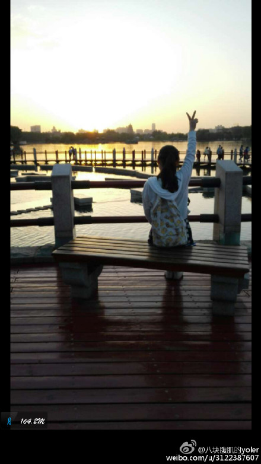
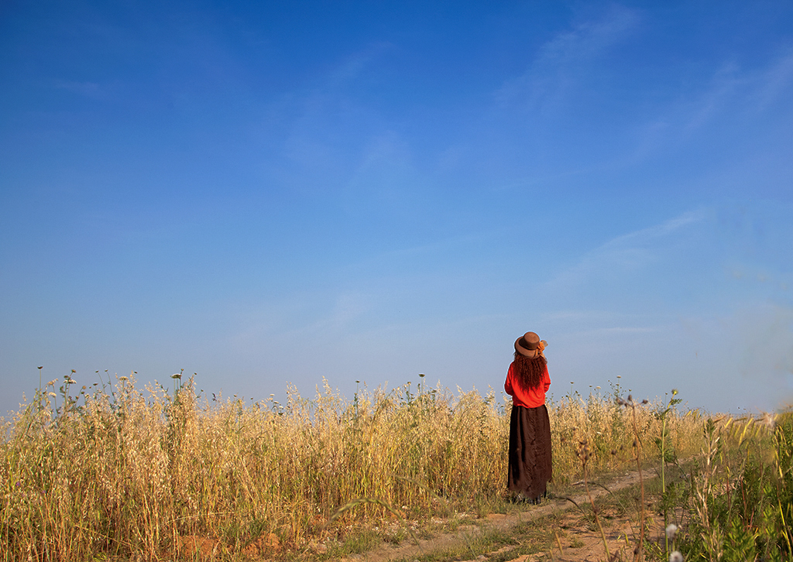

从你的全世界路过
看你笑靥如花


我在你最近的远方
张嘉佳说：“故事的开头总是这样，适逢其会，猝不及防。故事的结局总是这样，花开两朵，天各一方”。可不可以等等我，等我幡然醒悟，等我明辨是非，等我说服自己，等我爬出悬崖。等我缝好胸腔，来看你。
你离开了从此没人和我说话
斑驳的夜色里，我无论牵挂谁，思念都将坠落在你身边。你的每一次皱眉，每一个眼神，我都深深的保存着。你说大屎人，我愿为你画眉，一生一世。我说小屎人，我希望十年后,躺在我身边的人是你。我们都预见着美好的未来，却生生活成我的生活与你无关。


得你一支配我胸襟就好
我希望有个如你一般的人。如这山间清晨一般明亮清爽的人，如奔赴古城道路上阳光一般的人，温暖而不炙热，覆盖我所有肌肤。我希望有个如你一般的人，这世界有人的爱情如山间清爽的风，有人的爱情如古城温暖的阳光。但没关系，最后是你就好。